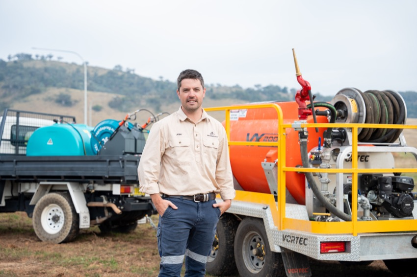
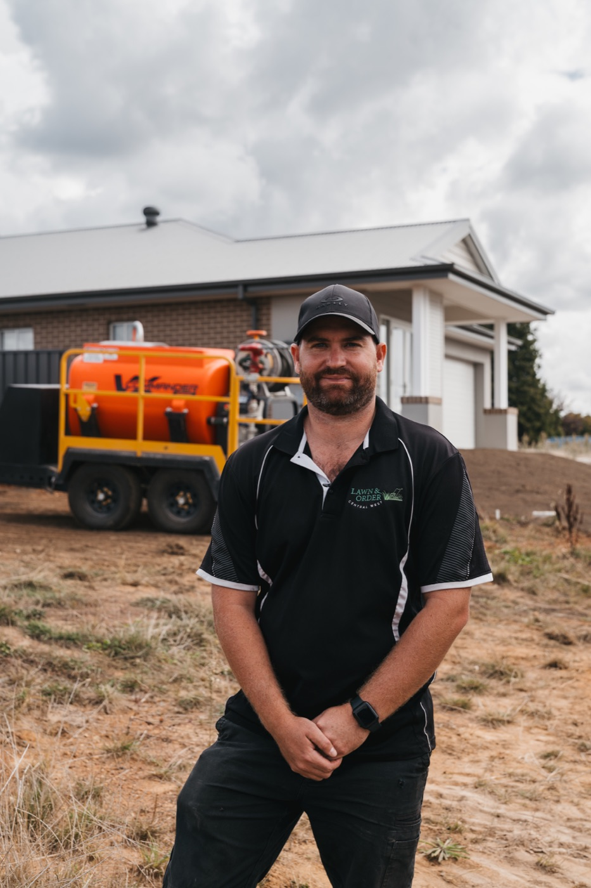
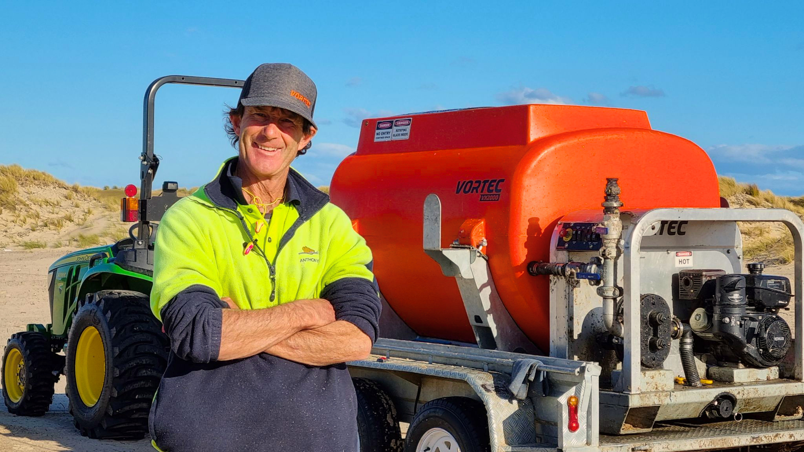

Batters & road corridors
Protect exposed surfaces as earthworks progress.
Hydroseeding & hydromulching
Need a crew for your next site, or the machine to take the work in-house? Vortec helps Melbourne project teams choose a clear erosion control path.
Hydroseeding applies seed, water, mulch and other specified materials as a slurry over prepared soil. For projects needing greater surface protection, hydromulching uses a mulch system suited to the site and specification.
Vortec supplies Australian-made hydroseeders and connects commercial project enquiries with hydromulching contractors.

Protect exposed surfaces as earthworks progress.
Plan vegetation establishment over broad areas.
Prepare for consistent seed application.
Choose mulch and seed to suit the site brief.
Choose your route
Both enquiries start with the practical details: location, area, substrate, access and the result your specification calls for.
Need a service?
Share your site details and Vortec can help connect your commercial project with hydromulching services. Useful when you need specialist application without adding a machine to your fleet.
Need equipment?
For contractors and councils with recurring works, an in-house hydroseeder can put application timing in your crew’s hands. Vortec can help you select the agitation system and configuration for your material and carrier.
Equipment for Melbourne crews
Choose a VX-Series paddle-agitated hydroseeder for wood fibre mulch, BFMs or FGMs. Choose a VR-Series jet-agitated hydroseeder for paper and pourable mulches. Skid and trailer options suit different carriers and programmes.
2,000 L · 500 m² per load · paddle agitation · wood fibre, paper and pourable mulch
View productTrailed VX2000 · paddle agitation · ADR-compliant road trailer
View product


Coverage is indicative and varies with the application rate and specification. Confirm current model details and availability with Vortec.
Project stories
Civil, rehabilitation, landscaping and turf teams share how they use Vortec hydroseeders.
Fulton Hogan brought the VX2000 trailer in-house to apply hydromulch and other controls without waiting for a third-party programme.
Read the case study
NACAP uses its VX2000 to hydromulch after reinstatement and choose seed mixes around landholder and site needs.
Read the case study
In the NSW Central Tablelands, The Regenerative uses the VX2000 for rehabilitation, cover crops, erosion and roadside easements.
Read the case study
Ground Tamers brought hydromulching and polymer spraying in-house with a VX2000 trailer, giving its team more control over availability.
Read the case study
Aaron Williams added hydroseeding to Lawn & Order’s mowing work and now manages lawn projects from seeding through to maintenance.
Read the case study
The VX2000 helped hydroseed 7 Mile Beach Golf Course, with Vortec reporting 1.3 million litres pumped.
Read the case studyCommon questions
Answers for teams deciding between a hydromulching service and their own hydroseeder.
Vortec connects commercial project enquiries with hydromulching services. Submit the site location, area, access and scope through the so the team can discuss a contractor option.
Yes. Vortec designs and manufactures hydroseeders in Australia. The range on this page includes compact VR units and the paddle-agitated VX2000, with skid and trailer options.
Both involve spraying a water-based mix over prepared soil. Hydromulching puts particular emphasis on the mulch layer used for surface protection and vegetation establishment. The actual blend and application rate should follow the project specification.
The VX-Series uses paddle agitation and handles wood fibre, paper and pourable mulches. The VR-Series uses jet agitation for paper and pourable mulches. Confirm the exact material and application rate before selecting a machine.
Provide the Melbourne site address or postcode, approximate area, slope, access, substrate, specified materials and the date the site will be ready. Photos and drawings help clarify the scope.
Next step